Ralph McQuarrie

 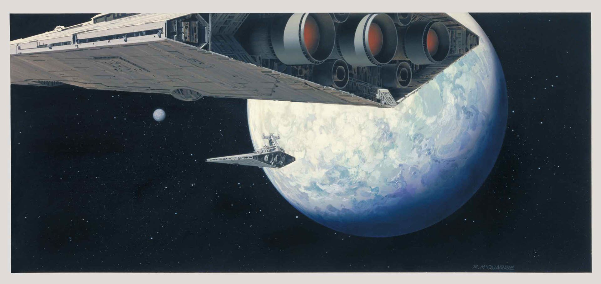
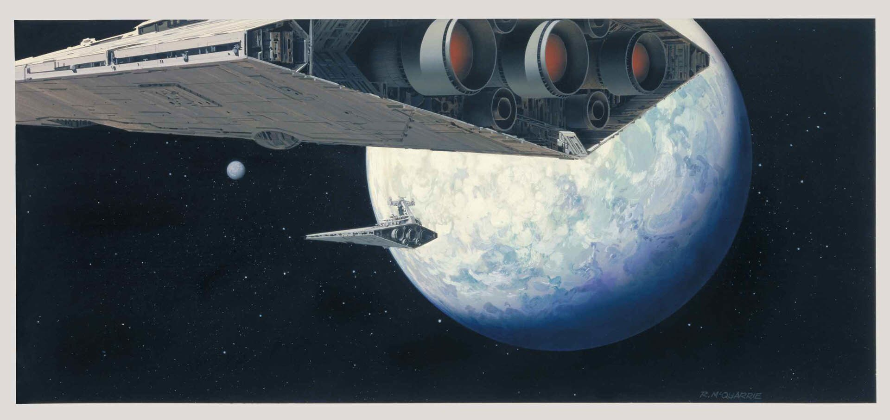
Syd Mead
 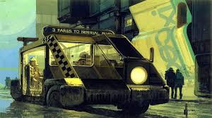
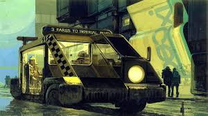

Moebius (Jean Giraud)
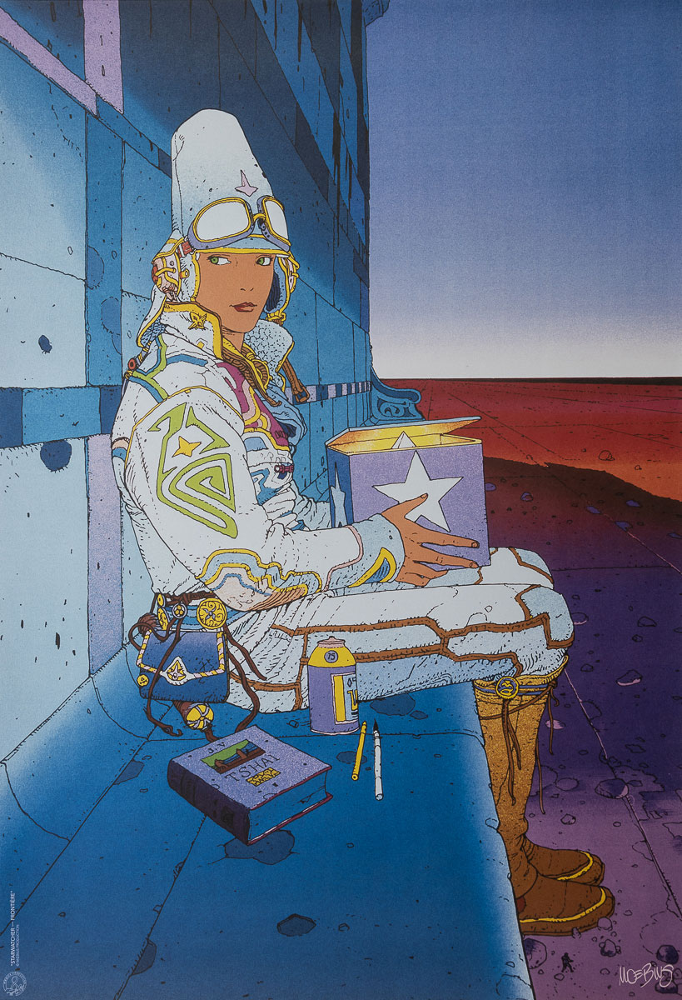
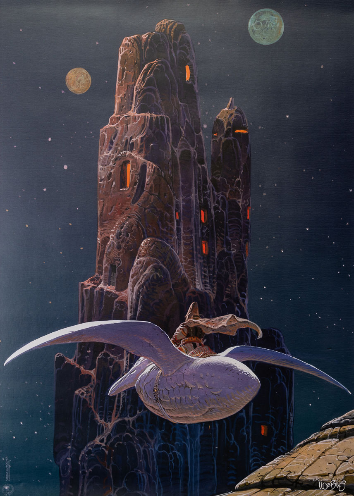
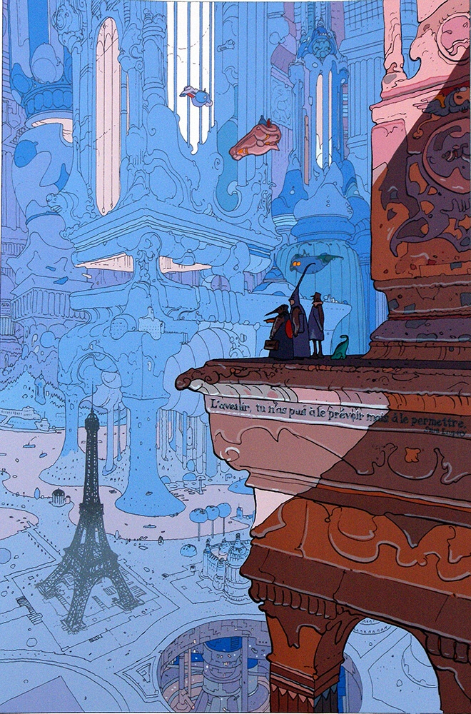
Katsuhiro Otomo

 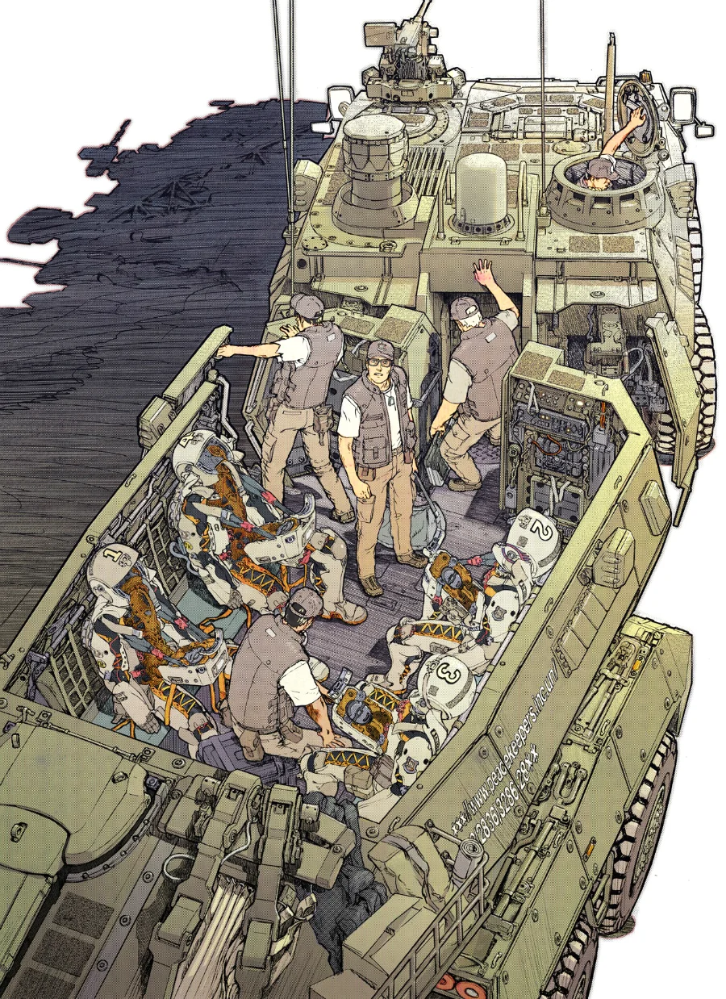
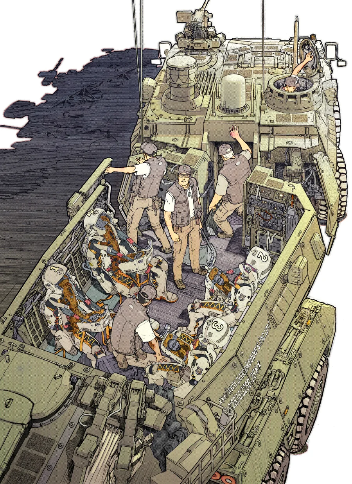
Masamune Shirow
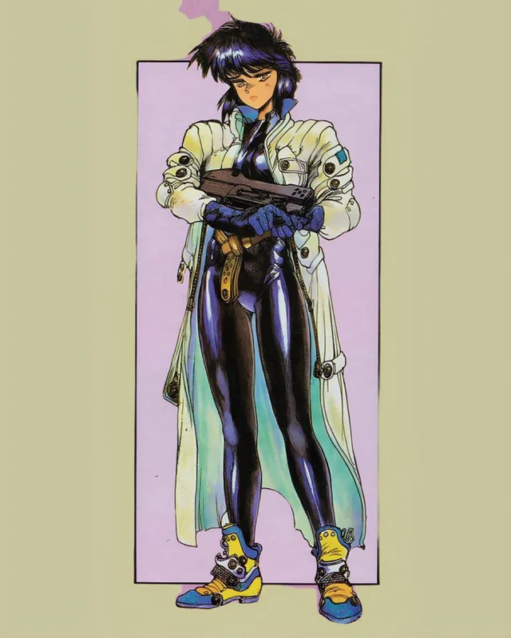
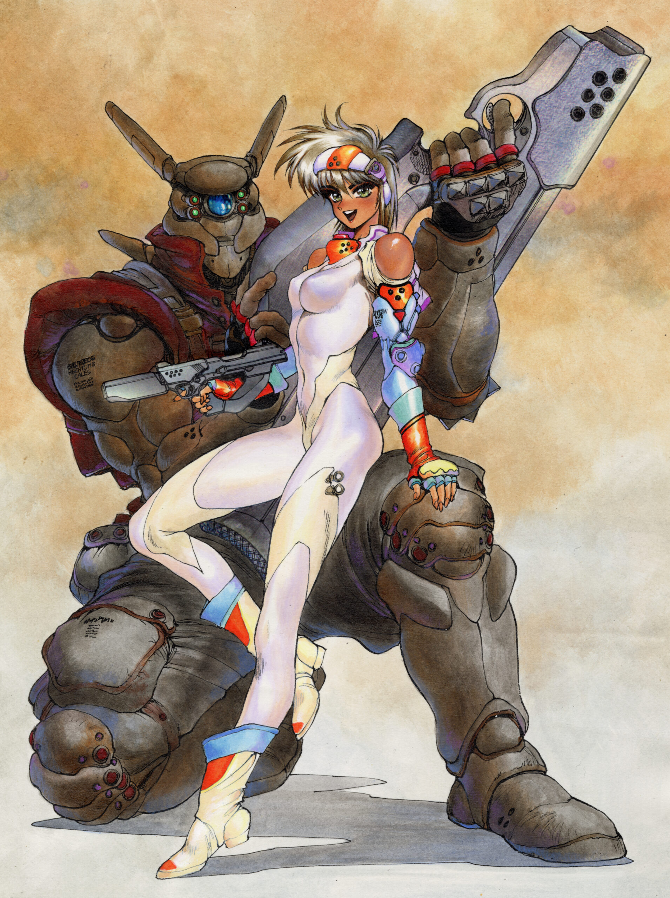
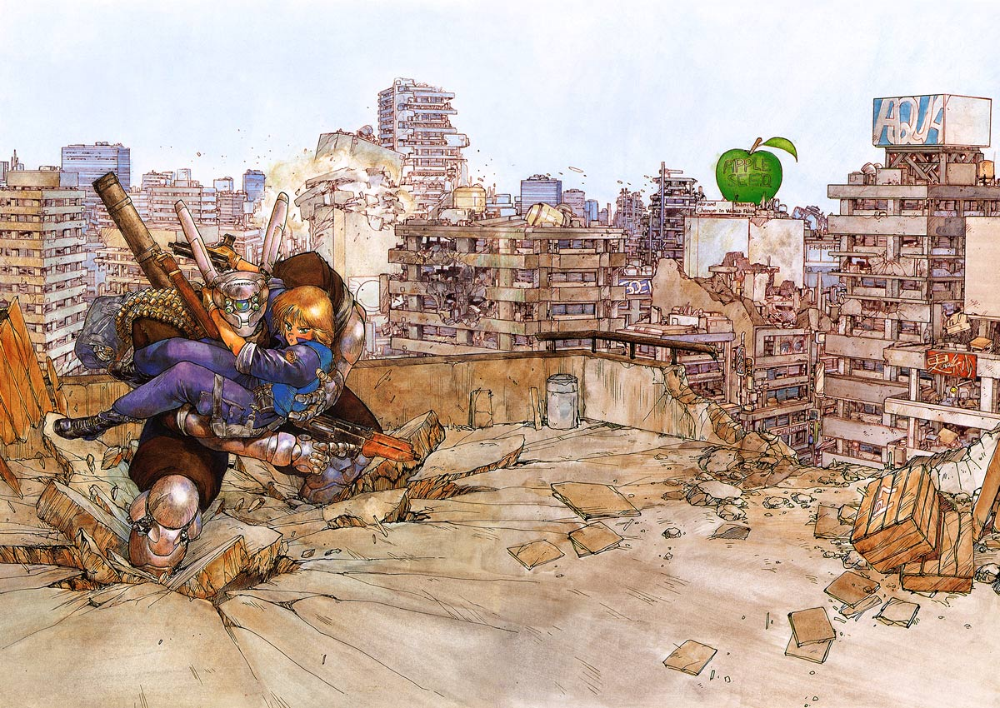
„A long time ago in a galaxy far, far away....“
Filmski klasici poput Star Wars (1977) serijala i
2001: A Space Odyssey (1968) postavili su temelje žanra kroz prepoznatljiv vizualni stil i inovativne narative.
Animirani naslovi poput Akire (1988), Ghost in the Shell (1995)
i Cowboy Bebopa (1998) pridonijeli su razvoju žanra svojim složenim, futurističkim svjetovima i estetikom cyberpunka.
Posebno se ističu i umjetnici poput Syd Meada, čiji su dizajni definirali izgled budućnosti,
te H.R. Gigera, čija je mračna biomehanička vizija obilježila film Alien (1979).
Ova sinergija filma, animacije i umjetnosti oblikuje znanstvenu fantastiku kao jedinstven i lako prepoznatljiv žanr.
Moji najdraži umjetnici
Moji najdraži filmovi i serije
| Moji najdraži SF filmovi i serije - Informacije | ||||
|---|---|---|---|---|
| Vrsta | Naslov | Godina | Redatelj / Autor | Prihod (USD) |
| Serija | Cowboy Bebop | 1998 | Shinichirō Watanabe | - (TV serija) |
| Neon Genesis Evangelion | 1995–1996 | Hideaki Anno | - (TV serija) | |
| Film | Akira | 1988 | Katsuhiro Otomo | ≈ 49 milijuna |
| Star Wars (Originalna trilogija) | 1977–1983 | George Lucas | ≈ 1.798 milijardi | |
| Blade Runner | 1982 | Ridley Scott | ≈ 41 milijuna | |
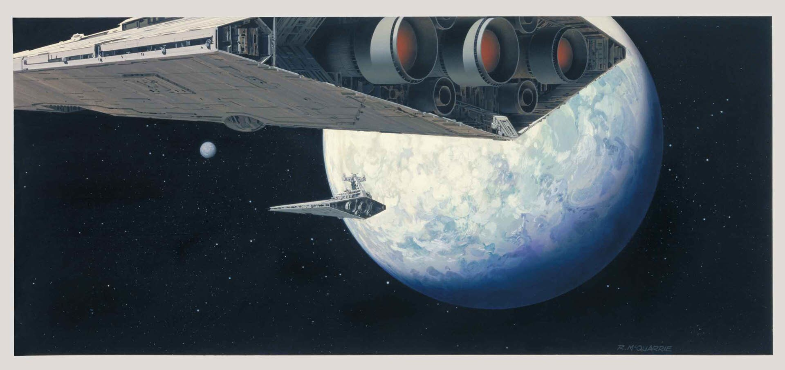
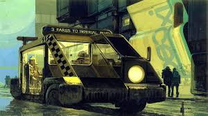
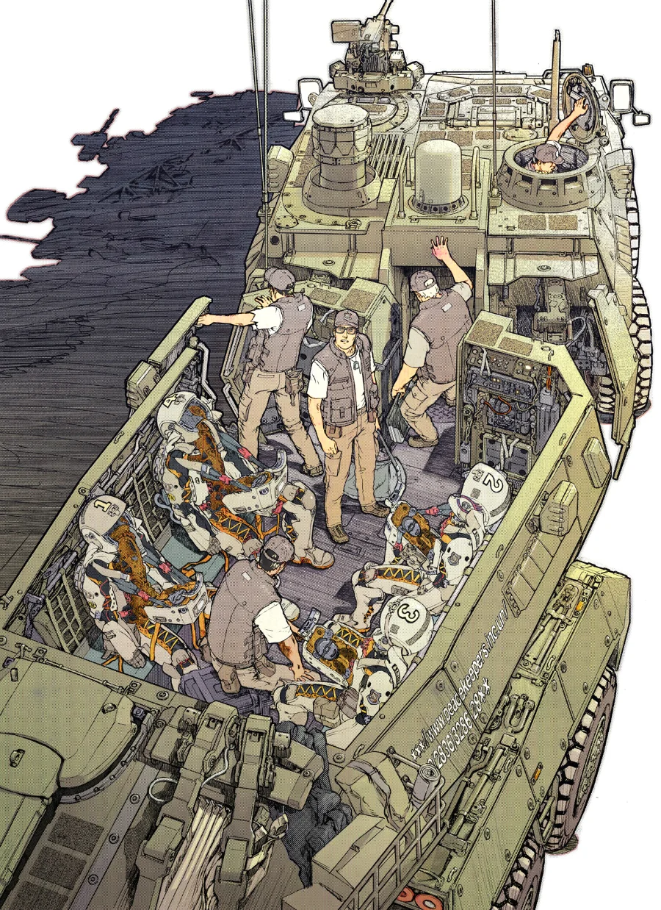